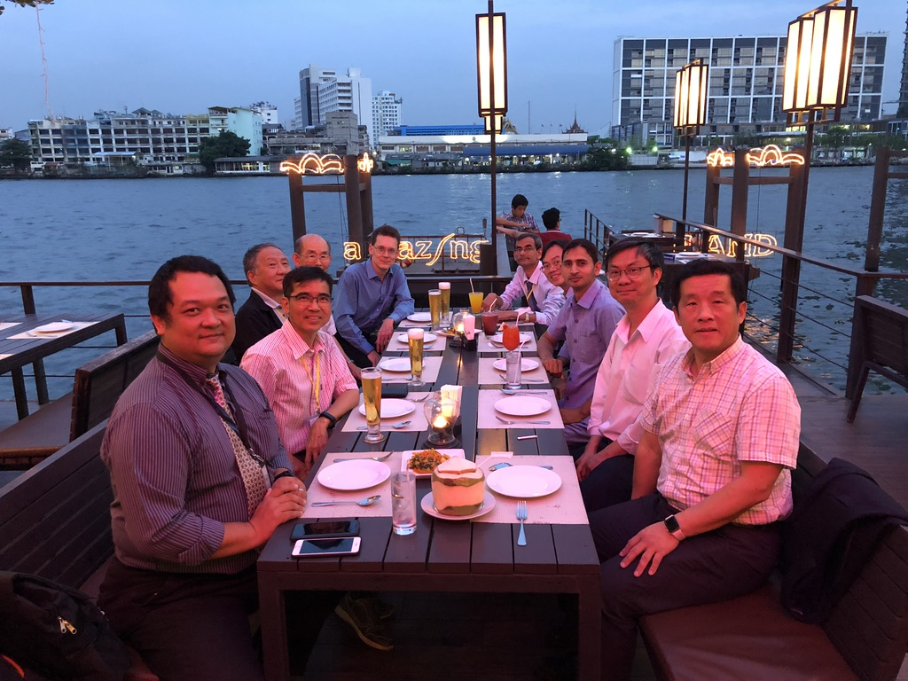

OPTImization for MAchine Learning ( OPTIMAL )
Research Group
IIT INDORE'S BEST UG RESEARCH AWARD 2018-2019

WINTER SCHOOL ON DEEP LEARNING AND AI, BANGKOK , DEC 2018
IEEE SSCI 2018, NOV 18 - 21, 2018, BANGLORE
INDO-FRENCH WORKSHOP, IIT INDORE, AUG 29-32, 2018
NTU INDIA CONNECT PROGRAM, 2017

DISCIPLINE OF MATHEMATICS, IIT INDORE
MACHINE LEARNING
Machine learning (ML) is the scientific study of algorithms and statistical models that computer systems use to effectively perform a specific task without using explicit instructions, relying on patterns and inference instead. It is seen as a subset of artificial intelligence. Machine learning algorithms build a mathematical model of sample data, known as "training data", in order to make predictions or decisions without being explicitly programmed to perform the task.[1][2]:2 Machine learning algorithms are used in a wide variety of applications, such as email filtering, and computer vision, where it is infeasible to develop an algorithm of specific instructions for performing the task. Machine learning is closely related to computational statistics, which focuses on making predictions using computers. The study of mathematical optimization delivers methods, theory and application domains to the field of machine learning. Data mining is a field of study within machine learning, and focuses on exploratory data analysis through unsupervised learning.[3][4] In its application across business problems, machine learning is also referred to as predictive analytics.
LATEST NEWS
- IIT Indore Special Session on "Non-parallel Support Vector Machine classifiers" at IEEE SMC 2019, Paper Submission Deadline: March 31, 2019.
- Special Session on "Soft Computing: Data Driven Approach for Bio-medical and Healthcare" at IEEE SMC 2019, Paper Submission Deadline: March 31, 2019.
- Lead Guest Editor: ACM Transactions on Multimedia Computing, Communications, and Applications (TOMM) (SCI Indexed), Paper Submission Deadline: May 31, 2019.
- News: Our work entiled "Sparse pinball twin SVM" received IIT Indore "Best UG Researcher Award". Congratulations to the team Dr. Aruna Tiwari, Mr. Rahul and Mr. Sanchit.
- Feb, 2019: Ms. Emilia Arens (DAAD RISE Fellow) likely to join our group from July 2019. .
- Feb, 2019: MHRD SPARC Joint Research Project Approved with NTNU Norway.
- December 2018: Winter School on Deep Learning and AI, Bangkok.
- May, 2018: Book on Machine Intelligence and Signal Analysis, Springer.
- May, 2018: Dr. Tanveer is invited as Visiting Professor at Federal University of Minas Gerais, Brazil during June-July, 2018.
LATEST PUBLICATIONS
- M. Tanveer, A. Tiwari, R. Choudhary, S. Jalan (2019), Sparse pinball twin support vector machines, Applied Soft Computing, Elsevier. [SCI Indexed with Impact Factor: 3.907]
- Eric-Juwei Cheng, Kuang-Pen Chou, Shantanu Rajora, Bo-Hao Jin, M. Tanveer, Chin-Teng Lin, Ku-Young Young, Wen-Chieh Lin, Mukesh Prasad (2019), Deep sparse representation classifier for facial recognition and detection system, Pattern Recognition Letters, Elsevier. [SCI Indexed with Impact Factor: 1.952]
- B. Richhariya, M. Tanveer (2019) A fuzzy universum support vector machine based on information entropy. In: Tanveer M., Pachori R. (eds) Machine Intelligence and Signal Analysis. Advances in Intelligent Systems and Computing, vol 748. Springer, Singapore
- M. Dalal, M. Tanveer, R.B. Pachori (2019) Automated identification system for focal EEG signals using fractal dimension of FAWT-based sub-bands signals. In: Tanveer M., Pachori R. (eds) Machine Intelligence and Signal Analysis. Advances in Intelligent Systems and Computing, vol 748. Springer, Singapore
- B. Richhariya, M. Tanveer (2018), A robust fuzzy least squares twin support vector machine for class imbalance learning. Applied Soft Computing, Elsevier, 71:418-432. [SCI Indexed with Impact Factor: 3.907]
- B. Richhariya, M. Tanveer (2018), EEG signal classification using universum support vector machine. Expert Systems with Applications, Elsevier, 106: 169-182. [SCI Indexed with Impact Factor: 3.928]
- Swastik Gupta, Konduri Hari Krishna, R.B. Pachori, M. Tanveer (2018), Fourier-Bessel series expansion based technique for automated classification of focal and non-focal EEG signals. International Joint Conferences on Neural Network (IJCNN), July 08-13, 2018, Rio, Brazil [Core Rank: A].